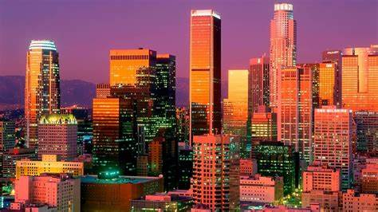
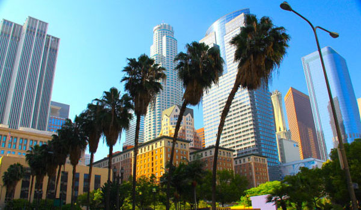

L.O.S. A.N.G.E.L.E.S.
Ця подорож була моєю мрією, і ось, нарешті, я опинився в Лос-Анджелесі — місті яскравих вогнів, кінозірок та океанських пляжів.

Першим місцем, яке я відвідав, став Голлівудський бульвар. Я пройшовся Алеєю Слави, шукаючи зірки улюблених акторів. Біля Китайського театру TCL я побачив відбитки рук і ніг легендарних зірок кіно.
Далі моя подорож привела мене до Юніверсал Студіос – тематичного парку, де можна відчути себе частиною улюблених фільмів. Я покатався на атракціонах, побував на зйомочних майданчиках і навіть побачив декорації з «Гаррі Поттера». Наступною зупинкою став пляж Венеція-Біч, відомий своєю атмосферою свободи та креативності. Там я спостерігав за вуличними художниками, спортсменами на скейтбордах та серферами, які ловили хвилі Тихого океану. Не міг не відвідати і Гріффіт-обсерваторію, звідки відкривається найкращий краєвид на Лос-Анджелес. Коли сонце почало сідати, місто загорілося тисячами вогнів, і цей момент став одним із найяскравіших у моїй подорожі.
Також я не міг оминути Беверлі-Гіллз. Я побував на Родео-Драйв, де розташовані магазини люксових брендів, і помилувався шикарними особняками. Моєю улюбленою частиною поїздки став Гріффіт-обсерваторія. Звідти відкривався захопливий вид на місто та знаменитий напис "Hollywood". На заході сонця Лос-Анджелес виглядав просто казково.
Ця поїздка залишила неймовірні враження. Лос-Анджелес — це місто, яке надихає та дарує незабутні спогади!